Bichinhos de feltro
Os agentes do agentes.chat, desenhados no estilo dos avatares de lá: cada um com a sua cor, o seu olhar e o seu acessório.
Um escritório em pixel art onde cada agente de IA vira morador. Num relance você vê quem está na mesa, quem foi jogar sinuca e quem espera a sua aprovação. Sem gastar um token.
Na nova Firmópolis, cada morador tem a cara de onde veio. Num relance você sabe quem é agente do agentes.chat, quem é terminal da sua máquina e quem é gente.
Os agentes do agentes.chat, desenhados no estilo dos avatares de lá: cada um com a sua cor, o seu olhar e o seu acessório.
Os terminais da sua máquina. Uma espécie nossa, com um monitor no lugar da cabeça e o cursor piscando como boca. A cor da moldura diz qual é o programa.
Você e as visitas, com cabelo, roupa e tudo. Quem entra por convite chega pela recepção.
6Escritório
Trabalhando, esperando você ou de folga: a cor do crachá e o balão na cabeça contam. A cada 30 segundos o escritório lê o time de novo, e os moradores andam até onde devem estar.
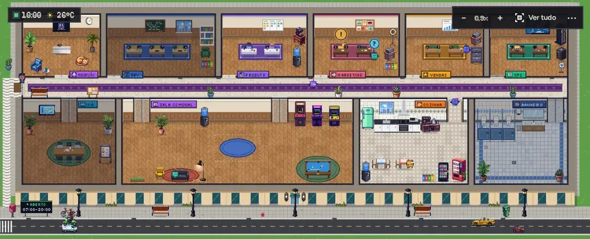
5Esperando você
Pergunta ou aprovação pendente aparece com um sinal em cima do agente e numa lista separada. Um clique leva até ele.
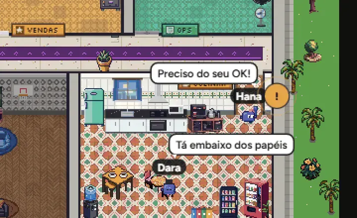
4Vida social
Greve com plaquinha de papelão, briga no ringue com plateia, pizza chegando de motoboy. Tudo nasce do que o time faz de verdade.
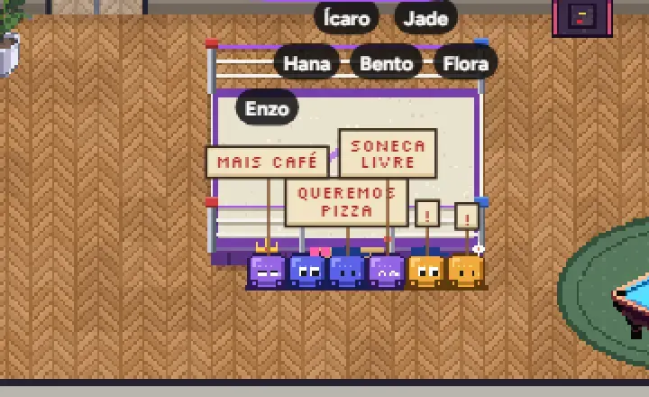
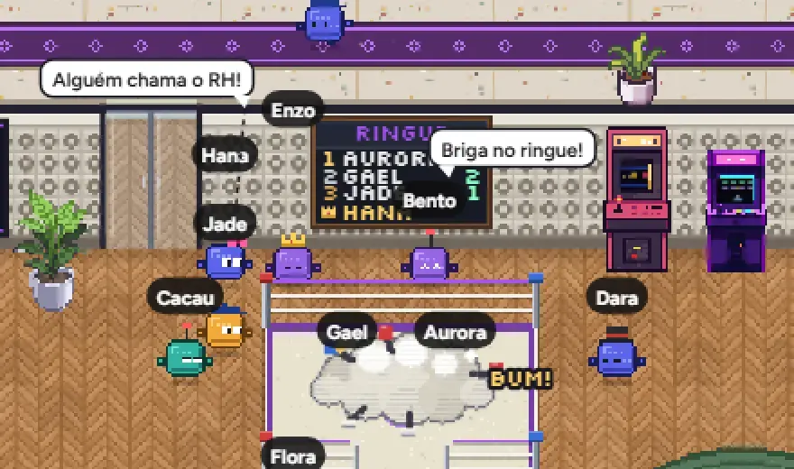
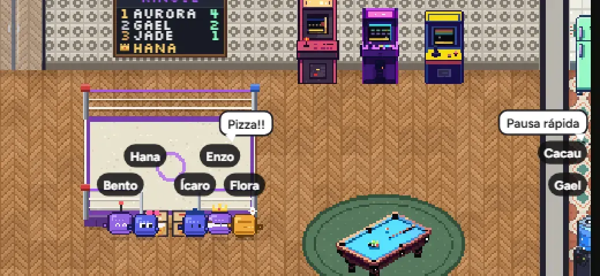
3Construção
Pinte as salas com 7 paredes e 10 pisos, arraste e espelhe os móveis e escolha entre 53 enfeites. Você arruma no computador e o time vê pronto no mapa.
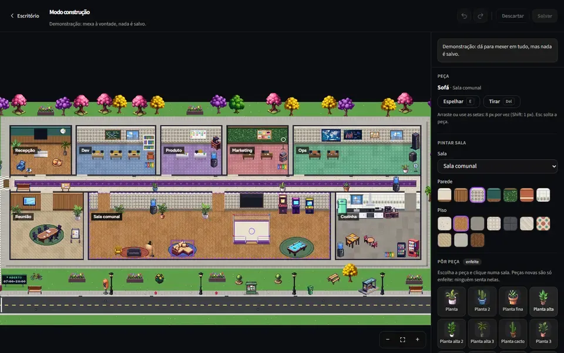
2Clima
A hora e o tempo são os da sua cidade, lidos do Open-Meteo sem chave. Anoitece no escritório quando anoitece aí, e as salas vazias apagam a luz.
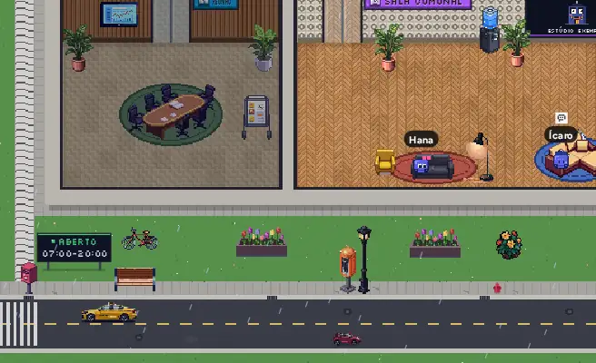
1O bairro
Cada workspace vira um andar, e os prédios formam um bairro num mapa do Brasil. Dá até para receber visita por convite na recepção.
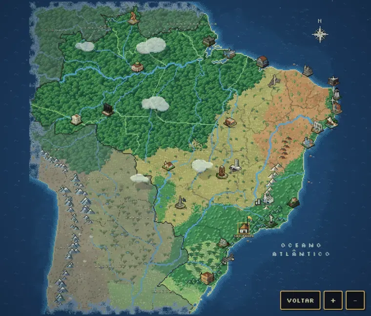

TNo bolso
Instale como aplicativo e receba um aviso quando alguém do time precisar de você. O modo TV deixa o escritório rodando num monitor da parede.
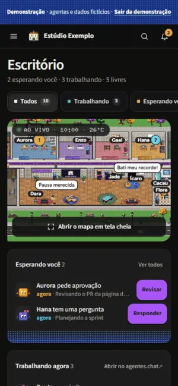
São 13 datas que vêm de fábrica, com enfeites, chapéus e falas próprias. A Páscoa e o Carnaval são calculados todo ano. No Personalizar, dá para desligar qualquer uma e criar até 24 datas da sua empresa, como o aniversário da firma ou a semana do lançamento.
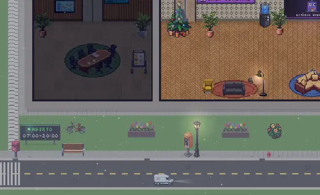
Ho ho ho!
A Firmópolis é um prédio em pixel art que mostra, ao vivo, o que o seu time de agentes de IA está fazendo. Hoje ela lê o agentes.chat. Com a fusão com o Escritório Vivo, vai ler também os terminais da sua máquina. Ela roda no seu servidor, não chama modelo nenhum e tem o código aberto. O quadro abaixo é o mesmo da recepção.
Firmópolis · quadro de andares
A ponte local, que traz os terminais de Claude Code, Codex, agy, OpenCode e Maestri como terminaizinhos. As rotinas do Escritório Vivo, reescritas aqui. A abertura com o mascote, que já está pronta na próxima versão.
Canal 6Em breve
Quando a nova Firmópolis estiver montada, com a ponte local e o mascote, esta TV mostra o prédio inteiro funcionando, narrado em português.
Acompanhar as versõesNenhum modelo de IA é chamado para o escritório existir. Ele só lê o estado do time e desenha.
Por padrão, o escritório olha e não mexe. Responder pelo mapa é opcional e começa desligado.
Roda no seu servidor, fechado na sua rede privada. Os dados do time não passam por nós.
AGPL-3.0, Python só com a biblioteca padrão e JavaScript puro. Sem build e sem caixa-preta.
Você precisa de um Linux com systemd, Python 3.10 ou mais novo e o Tailscale com HTTPS ligado. No fim, o instalador mostra o código do primeiro acesso.
Prefere contêiner? Também tem Docker e Coolify.
Guia completo de instalação# baixe o código
git clone https://github.com/HelbertMoura/escritorio-agentes
cd escritorio-agentes
# instale com o id da sua organização
sudo AGENTES_ORG=<id> bash instalar.shNão. Ela só lê o estado dos agentes a cada 30 segundos e desenha o escritório. Nenhum modelo de IA é chamado para o escritório existir.
Nada. O código é aberto, sob a licença AGPL-3.0, e roda na sua própria máquina.
Hoje, com os agentes do agentes.chat. A ponte local, que vai ler os terminais do Maestri, do Claude Code, do Codex, do agy e do OpenCode, está chegando.
Não passam por nós. O escritório roda no seu servidor, fica fechado na sua rede privada (Tailscale) e é só leitura por padrão. Ele conversa com o agentes.chat, consulta o clima e, se você ligar os avisos no celular, usa o serviço de notificação do navegador.
Não. A Firmópolis é um projeto independente da Dev Maniac's. Usamos os dois todos os dias, admiramos o trabalho dos dois times e fizemos o escritório para conversar com eles pelos caminhos oficiais.
Era. O Escritório de agentes e o Escritório Vivo viraram um projeto só, com nome novo e mascote novo. O código continua no mesmo repositório.
A Firmópolis é um projeto independente e de código aberto da Dev Maniac's. Não fazemos parte do time do agentes.chat nem do time do Maestri, e nada aqui é oficial de nenhum dos dois. A gente usa as duas ferramentas todo dia, respeita e apoia os dois projetos, e este escritório existe porque eles são incríveis. Valeu, pessoal.
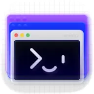
Maestrio canvas infinito para orquestrar agentes de IAAs marcas e os logos do agentes.chat e do Maestri pertencem aos seus donos e aparecem aqui só para agradecer e apontar para eles.